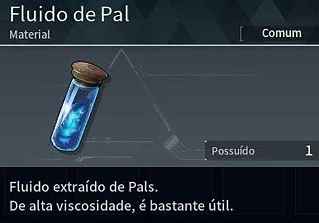

Red Dead Redemption 2
Publicado: 26/10/2018
Red Dead Redemption 2 é um jogo eletrônico de ação-aventura desenvolvido e publicado pela Rockstar Games. É o terceiro título da série Red Dead e uma prequela de Red Dead Redemption, tendo sido lançado em outubro de 2018 para PlayStation 4 e Xbox One e em novembro de 2019 para Microsoft Windows e Google Stadia.
A história se passa em 1899 em uma representação ficcional do oeste, meio-oeste e sul dos Estados Unidos e acompanha o fora da lei Arthur Morgan, que precisa lidar com o declínio do Velho Oeste e sobreviver à perseguição de forças governamentais, gangues rivais e outros adversários.
Leia mais..
Persona 3 Reload
Publicado: 01/01/2024
UPersona 3 Reload é um videogame RPG de 2024 desenvolvido e publicado pela Atlus. Reload é um remake de Persona 3, a quarta parcela principal da série Persona, que faz parte da franquia maior Megami
Tal como acontece com o jogo original, o protagonista é um estudante do ensino médio que retorna à sua cidade natal uma década depois que seus pais morreram em um acidente de carro fatal. Ele logo ganha o potencial de invocar uma Persona – a manifestação física de seu espírito interior, e se junta ao Esquadrão Especializado de Execução Extracurricular (SEES), um grupo de usuários de Persona com ideias semelhantes. Juntos, eles têm a tarefa de derrotar Shadows e desvendar o mistério da Dark Hour.
Assista sobre..
Palworld
Publicado: 19/01/2024

Palworld é um jogo de sobrevivência de ação e aventura do desenvolvedor japonês Pocket Pair. O jogo se passa em um mundo aberto povoado por criaturas semelhantes a animais conhecidas como "Pals". Os jogadores podem lutar e capturar amigos para usá-los na construção de bases, travessia e combate.
Leia mais..
Skyrim
Publicado: 11/11/2011

The Elder Scrolls V: Skyrim é um jogo eletrônico de RPG de ação desenvolvido pela Bethesda Game Studios e publicado pela Bethesda Softworks. É o quinto jogo principal da série The Elder Scrolls, seguindo The Elder Scrolls IV: Oblivion.
Leia mais..